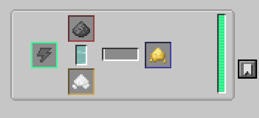
The over way is to combine water, oxygen and coal in pressurized reaction Chamber with outputs Sulfur and Hidrogen.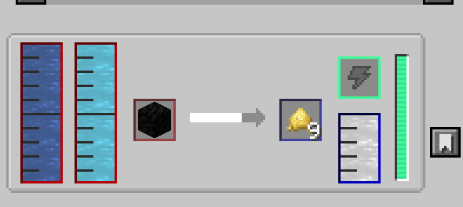
Then Sulfur is oxidized in Chemical Oxidizer into Sulfur Dioxide.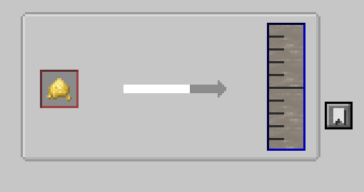
After that Sulfur Dioxide is infused in Chemical Infuser with Oxigen into Sulfur Trioxide.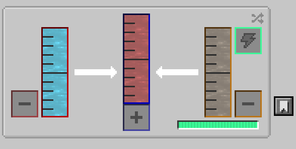
Then Sulfur Trioxide is made into Sulfuric asid in Chemical Infuser by adding Water Vapor.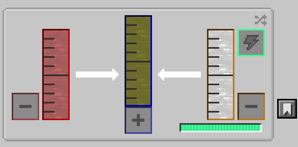
Water Vapor is made out of water in Rotary Condensen in Decondensentrating mode (the arrow points left) to switch the mode you need to press the button with a switch icon in top left corner of the machine gul.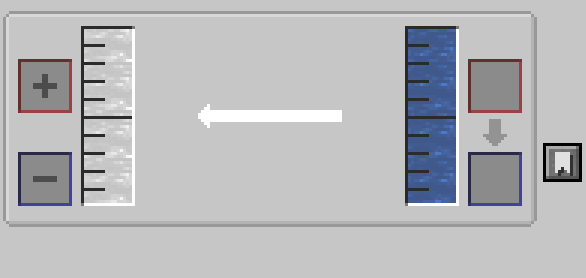
Next you need to disolve Fluorite in Sulfuric Asid in side of chemical Dissolution Champer.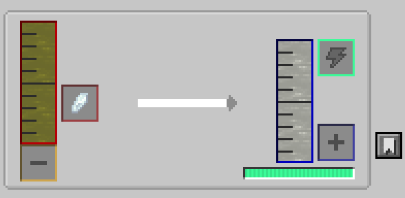
Now it`s the time to add Uranium. First, Uranium needs to be enriched inside of Enrichment Chamber to get yellow cake Uranium.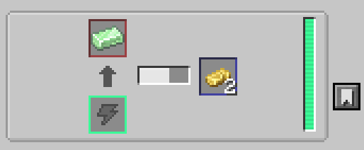
Then it is oxidised in Chemical Oxidiser into Uranium Oxide.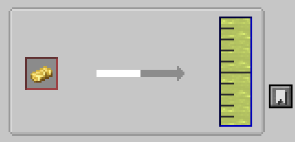
Hidrosulfuric Asid is now combined with Uranium Oxide inside of Chemical Infuser into Uranium Hexafluoride.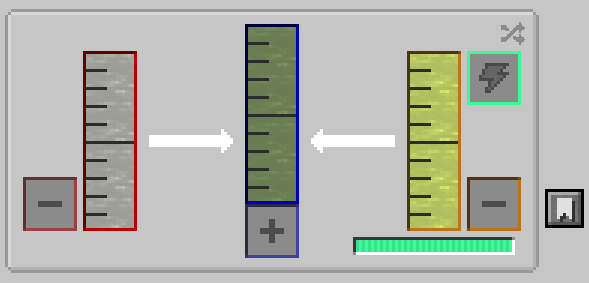
And, finaly, Uranium Hexafluoride is centercenterfused in Isotopic Centerfuge into Fissile Fuel.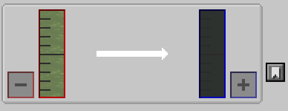